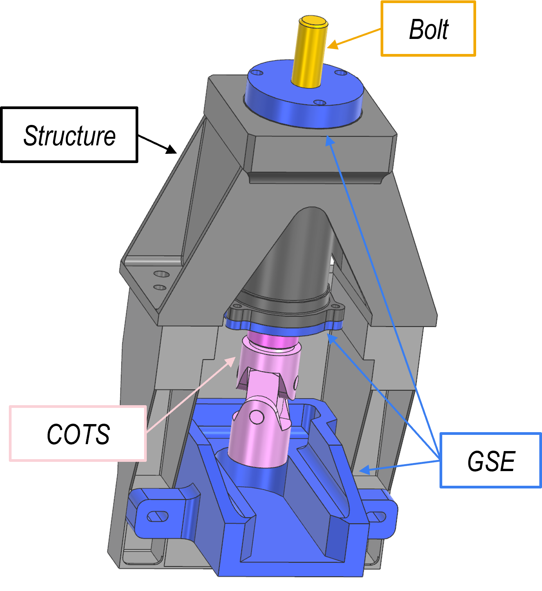
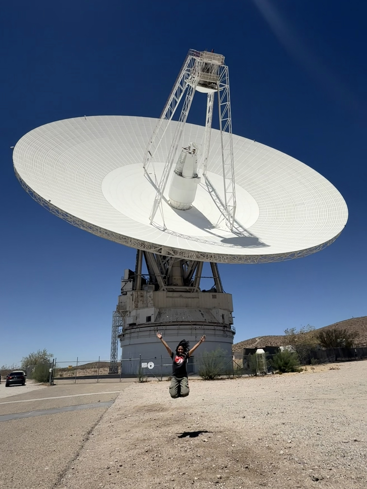
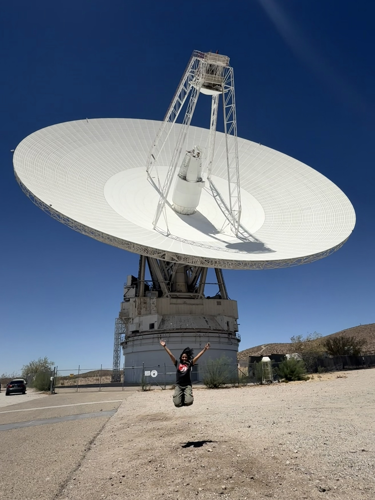

During my internship in the Spacecraft Mechanical Engineering section at NASA’s Jet Propulsion Laboratory, I supported the Separations team for the proposed Mars Sample Return mission.
My work included designing press-fit tooling for cup-and-cone separation interfaces, developing ground support equipment (GSE) for a torque multiplier, and creating an Excel-based mass-model sizing tool for the Developmental Test Model (DTM).

Press-Fit Tool Redesign: I designed a compact, modular press-fit tool capable of applying ~5,000 lbf to install cup-and-cone separation interfaces. The tool was constrained by tight spacecraft clearances, required precise alignment to prevent hardware damage, and incorporated contamination mitigation features. Adjustable threaded rods enabled reuse across multiple interfaces for both insertion and potential removal.

I also developed an Excel-based analysis tool to estimate required press forces across different material pairs and interference tolerances, ensuring safe operation margins.
The redesigned press-fit tool was greenlit for continued development, cutting component count by more than 50% and significantly simplifying installation compared to the prior concept.

Torque Multiplier Ground Support Equipment (GSE):
I designed GSE to interface a torque multiplier with the Separation Nut, producing engineering drawings and a 3D-printed prototype.
I validated usability by walking through assembly, torquing, and removal workflows to ensure safe and efficient operation by ATLO engineers.

Mass-Model Sizing Tool: I developed an Excel-based tool linked to CAD that automatically generates simplified mass-model geometry for electrical boxes in the Developmental Test Model (DTM).
Users input mass properties, key dimensions, and materials, and the tool outputs CAD-ready geometry for structural and vibration testing. After onboarding the configuration engineer, the tool was adopted for ongoing use and recognized for improving efficiency.
Outside of project work, I had the opportunity to explore JPL’s facilities, including rover hardware labs, cleanroom environments, and the Deep Space Network operations center.

 
